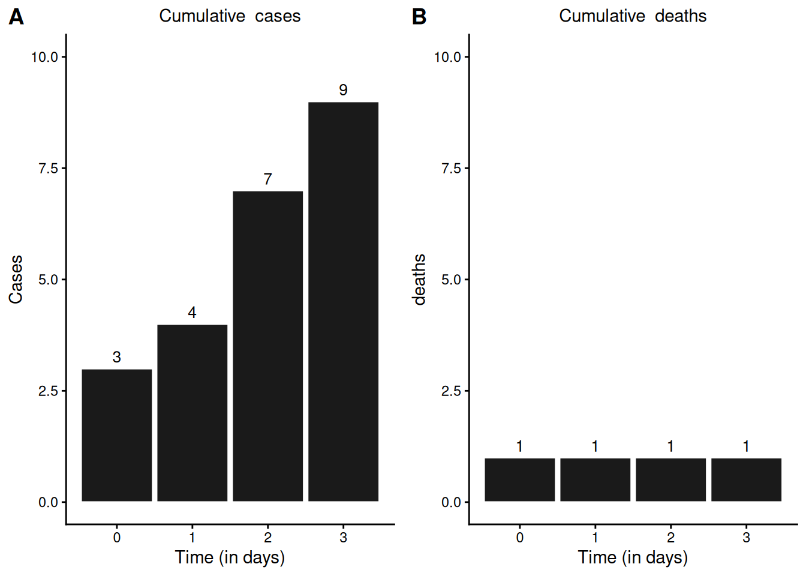
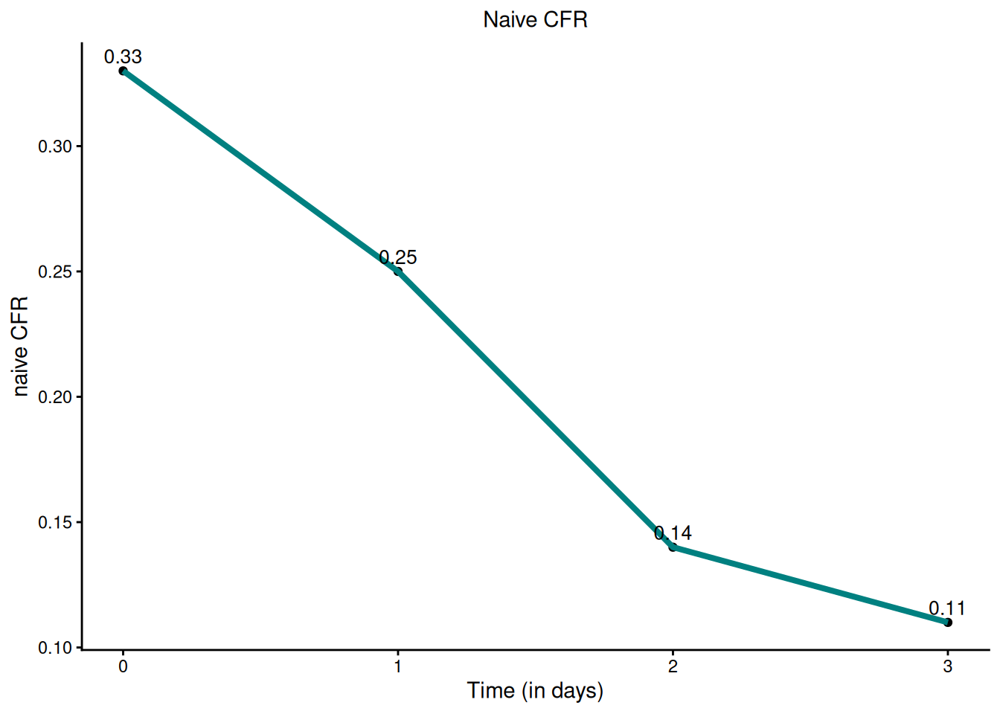
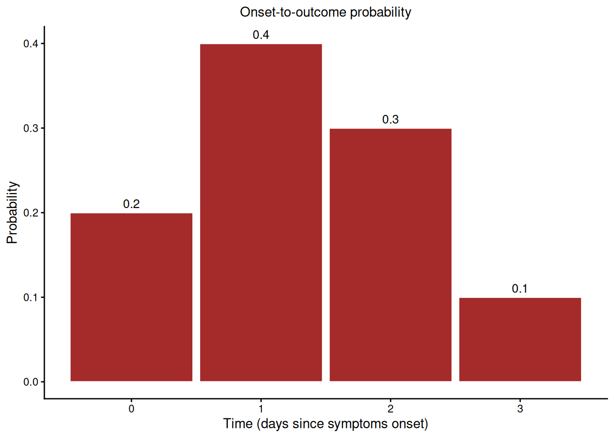
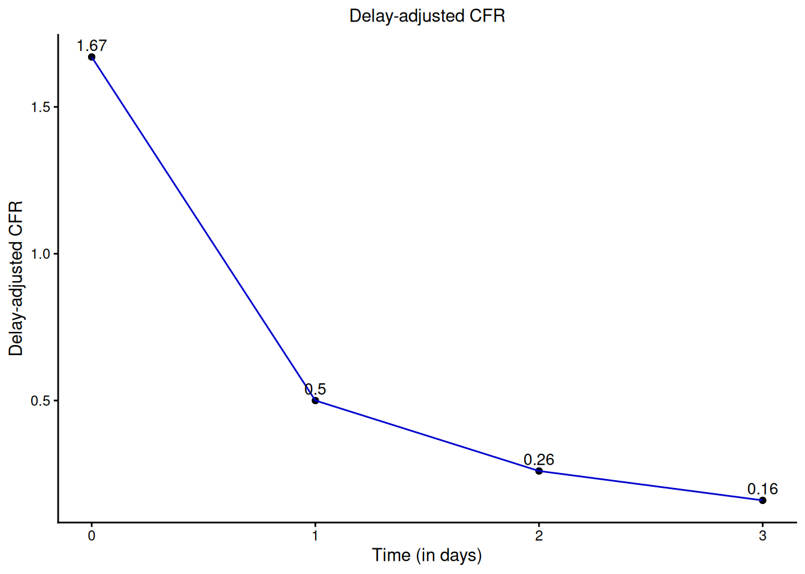
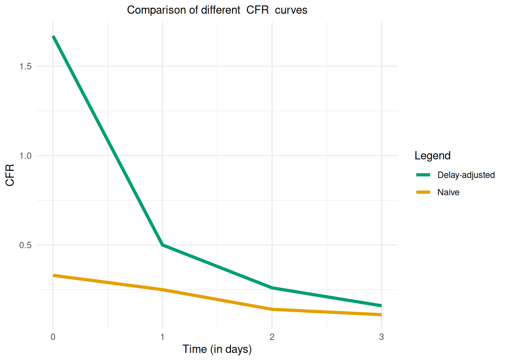

| Time | Cases | Deaths |
|---|---|---|
| 0 | 3 | 1 |
| 1 | 1 | 0 |
| 2 | 3 | 0 |
| 3 | 2 | 0 |
Apêndice B — Como ajustar o CFR pelo atraso
NotaPerguntas
- Como os atrasos são levados em conta ao estimar o CFR?
DicaObjetivos
- Compreender como os atrasos são incorporados à estimativa de gravidade
- Compreender o fator de subestimação
- Compreender os mecanismos por trás do
{cfr}
Introdução
O pacote {cfr} leva em conta os atrasos do início dos sintomas ao desfecho para produzir estimativas mais precisas do risco de letalidade (CFR). Este documento descreve como esses atrasos são incorporados e explica o arcabouço matemático subjacente que viabiliza esse ajuste.
Estimativa ingênua do CFR
Considere um conjunto de dados contendo casos incidentes diários e óbitos.
Ao examinar suas distribuições cumulativas (como ilustrado na figura abaixo), podemos desejar estimar o risco de letalidade (CFR).

A estimativa ingênua do CFR, denotada por \(b_t\), é calculada como a razão entre os óbitos acumulados \(D_t\) e os casos acumulados \(C_t\) no tempo \(t\):
\[b_t = \frac{D_t}{C_t} \]
A aplicação direta dessa fórmula ao nosso conjunto de dados resulta nos valores de \(b_t\) mostrados na figura abaixo.

Essa abordagem, embora direta, não leva em conta a defasagem temporal entre a notificação do caso e a ocorrência do óbito, o que pode levar a estimativas enviesadas (subestimativas), principalmente durante os estágios iniciais de um surto ou quando o número de casos está mudando rapidamente e muitos deles permanecem com desfecho desconhecido.
CFR não enviesado
Para entender como os atrasos afetam a estimativa ingênua do CFR, podemos expressar \(C_t\) e \(D_t\) em função das incidências \(c_t\).
O número acumulado de casos é simplesmente a soma de todos os casos confirmados até o tempo \(t\): \[C_t = \sum\limits_{i=0}^{t}c_i.\]
No entanto, o número acumulado de óbitos representa uma proporção de casos confirmados com desfechos conhecidos até o tempo \(t\). Isso deve levar em conta a distribuição de atraso entre a confirmação do caso e o óbito
\[ D_t = p_t\times \sum\limits_{j=0}^{t}\sum\limits_{i=0}^{j}c_{i}f_{j-i}\]
onde:
- \(i\): o dia em que os casos ocorreram (o dia da incidência).
- \(j\): o dia até o qual os desfechos esperados estão sendo acumulados (o dia cumulativo).
- \(j - i\): o atraso entre a incidência e o desfecho, isto é, o número de dias decorridos desde que os casos do dia \(i\) ocorreram.
- \(c_i=\) número de casos confirmados no dia \(i\)
- \(f_s\) = função densidade de probabilidade para o atraso de \(s\) dias entre a confirmação do caso e o desfecho
- \(p_t\) = proporção de casos que resultam em óbito (CFR verdadeiro) no tempo \(t\)
Então o CFR não enviesado seria
\[ b_t = p_t \times u_t \]
onde:
\[ u_t = \frac{\sum\limits_{j=0}^{t}\sum\limits_{i=0}^{j}c_{i}f_{j-i}}{\sum\limits_{i=0}^{t}c_i} = \frac{\text{cumsum}(\text{expected outcomes})_t}{\text{cumsum}(\text{cases})_t} \]
De fato, \(u_t\) é chamado de fator de subestimação. Um \(u_t\) baixo significa que muitos casos ainda estão sem desfecho, o que puxa o CFR ingênuo para baixo.
Assim, a verdadeira proporção de casos confirmados que evoluem a óbito pela infecção é dada por:
\[ p_t = b_t\frac{\sum\limits_{i=0}^{t}c_i}{\sum\limits_{j=0}^{t}\sum\limits_{i=0}^{j}c_{i}f_{j-i}} \]
Na prática, a distribuição de atraso \(f_s\) é estimada a partir de amostras de dados de início dos sintomas ao desfecho. No entanto, quando os óbitos são poucos ou ausentes durante os estágios iniciais de um surto, premissas sobre \(f_s\) devem ser feitas com base na literatura de surtos anteriores da mesma doença ou de doenças semelhantes.
Nota
Observe que a expressão de \(p_t\) acima simplifica para a mesma forma mostrada na Figura 4 de Garske et al. (2009): o CFR ajustado pelo atraso como os óbitos acumulados \(D_t\) divididos pelos desfechos esperados acumulados, em vez de por todos os casos confirmados como na estimativa ingênua:
\[ p_t = \frac{D_t}{\sum\limits_{j=0}^{t}\sum\limits_{i=0}^{j}c_{i}f_{j-i}} \]
Compare isso com os cálculos do Dia 0 e do Dia 1 abaixo: \(p_t\) é obtido dividindo os óbitos observados \(D_t\) pelo termo de desfechos esperados (\(0.6\) no Dia 0 e \(2\) no Dia 1).
Por exemplo, suponha que obtivemos a distribuição do início dos sintomas ao desfecho para o conjunto de dados do nosso exemplo. Essa distribuição, mostrada na figura abaixo, caracteriza a probabilidade de ocorrência de óbito \(s\) dias após a confirmação do caso.

Dado que as equações são aplicadas a dados de contagem discreta, como contagens diárias de casos e óbitos, \(f_s\) denota a Função Massa de Probabilidade (FMP) associada.
Podemos então usá-la para produzir estimativas de \(p_t\) da seguinte forma:
Dia 0
Em \(t = 0\), observamos \(C_0 = 3, D_0 = 1\), fornecendo uma estimativa ingênua \(b_0 = \frac{1}{3}\). No entanto, levando em conta os atrasos, o número esperado de óbitos até o dia 0 é
\[ \begin{equation} \begin{split} D_0 & = p_0 \times \sum_{j=0}^{0} \sum_{i=0}^{j} c_i f_{j-i} \\ & = p_0 \times \left( c_0 \times f_{0-0} \right) \\ & = p_0 \times \left( c_0 \times f_0 \right) \\ & = p_0 \times 3 \times 0.2 \\ & = p_0 \times 0.6 \end{split} \end{equation} \]
onde \(p_0\) representa o CFR verdadeiro. O fator \(3 \times 0.2 = 0.6\) representa a proporção esperada de casos com desfechos conhecidos até o dia 0, dada a distribuição de atraso. Observe que, como \(i\) varia apenas de \(0\) a \(j\), o atraso \(j - i\) está sempre entre \(0\) e \(j\) — nunca é negativo, de modo que \(f\) é sempre avaliada dentro de seu domínio definido. Portanto,
\[ b_0 = \frac{D_0}{C_0} = \frac{p_0 \times 0.6}{3} \]
O fator de subestimação \(u_0 = \frac{0.6}{3} = 0.2\) indica que \(b_0\) é apenas 20% do valor verdadeiro \(p_0\).
Resolvendo para \(p_0\), usando o fato de que \(b_0 = \frac{1}{3}\), obtemos
\[ \Rightarrow p_0 = \frac{b_0 \times 3}{0.6} = \frac{1}{0.6} = 1.67 \]
Dia 1
Em \(t = 1\), observamos \(C_1 = 4, D_1 = 1\), fornecendo uma estimativa ingênua \(b_1 = \frac{1}{4}\).
Levando em conta os atrasos, o número esperado de óbitos até o dia 1 é
\[ \begin{equation} \begin{split} D_1 & = p_1 \times \sum_{j=0}^{1} \sum_{i=0}^{j} c_i f_{j-i} \\ & = p_1 \times \left[ c_0 f_{0-0} + c_0 f_{1-0} + c_1 f_{1-1} \right] \\ & = p_1 \times \left[ c_0 \times (f_0 + f_1) + c_1 \times f_0 \right] \\ & = p_1 \times \left[ 3 \times (0.4 + 0.2) + 1 \times 0.2 \right] \\ & = p_1 \times 2 \end{split} \end{equation} \]
Então
\[ b_1 = \frac{D_1}{C_1} = \frac{p_1 \times 2}{4} \]
O fator de subestimação \(u_1 = \frac{2}{4} = 0.5\) indica que \(b_1\) é apenas 50% do valor verdadeiro \(p_1\).
Resolvendo para \(p_1\), obtemos
\[ \Rightarrow p_1 = \frac{b_1 \times 4}{2} = \frac{1}{2} = 0.5 \]
Dia 2
Em \(t = 2\), observamos \(C_2 = 7, D_2 = 1\), fornecendo uma estimativa ingênua \(b_2 = \frac{1}{7}\).
Levando em conta os atrasos, o número esperado de óbitos até o dia 2 é
\[ \begin{equation} \begin{split} D_2 & = p_2 \times \sum_{j=0}^{2} \sum_{i=0}^{j} c_i f_{j-i} \\ & = p_2 \times \Big[ c_0 f_{0-0} + c_0 f_{1-0} + c_0 f_{2-0} + c_1 f_{1-1} + c_1 f_{2-1} + c_2 f_{2-2} \Big] \\ & = p_2 \times \Big[ c_0 \times (f_0 + f_1 + f_2) + c_1 \times (f_0 + f_1) + c_2 \times f_0 \Big] \\ & = p_2 \times \Big[ 3 \times (0.2 + 0.4 + 0.3) + 1 \times (0.4 + 0.2) + 3 \times 0.2 \Big] \\ & = p_2 \times 3.9 \end{split} \end{equation} \]
Então
\[ b_2 = \frac{D_2}{C_2} = \frac{p_2 \times 3.9}{7} \]
O fator de subestimação \(u_2 = \frac{3.9}{7} = 0.56\) indica que \(b_2\) é apenas 56% do valor verdadeiro \(p_2\).
Resolvendo para \(p_2\), obtemos
\[ \Rightarrow p_2 = \frac{b_2 \times 7}{3.9} = \frac{1}{3.9} = 0.26 \]
DicaDesafio
Você consegue fazer isso?
- Calcule \(p_t\) no tempo \(t = 3\).
NotaSolução
Em \(t = 3\), observamos \(C_3 = 9, D_3 = 1\), fornecendo uma estimativa ingênua \(b_3 = \frac{1}{9}\).
Levando em conta os atrasos, o número esperado de óbitos até o dia 3 é
\[ \begin{equation} \begin{split} D_3 & = p_3 \times \sum_{j=0}^{3} \sum_{i=0}^{j} c_i f_{j-i} \\ & = p_3 \times \Big[ c_0 \times (f_0 + f_1 + f_2 + f_3) + c_1 \times (f_0 + f_1 + f_2) + c_2 \times (f_0 + f_1) + c_3 \times f_0 \Big] \\ & = p_3 \times \Big[ 3 \times (0.2 + 0.4 + 0.3 + 0.1) + 1 \times (0.2 + 0.4 + 0.3) + 3 \times (0.2 + 0.4) + 2 \times 0.2 \Big] \\ & = p_3 \times 6.1 \end{split} \end{equation} \]
Então
\[ b_3 = \frac{D_3}{C_3} = \frac{p_3 \times 6.1}{9} \]
O fator de subestimação \(u_3 = \frac{6.1}{9} = 0.68\) indica que \(b_3\) é apenas 68% do valor verdadeiro \(p_3\).
Resolvendo para \(p_3\), obtemos
\[ \Rightarrow p_2 = \frac{b_3 \times 9}{6.1} = \frac{1}{6.1} = 0.16 \]
Depois de calcular o CFR ajustado pelo atraso para \(t = 0, 2, \ldots, 3\), podemos traçar sua curva, como mostrado na figura abaixo.

DicaDesafio
CFR ingênuo vs ajustado
- Que diferenças você nota entre o CFR ajustado pelo atraso e o CFR ingênuo?
NotaDica
Esta figura pode lhe dar uma pista

NotaSolução
A estimativa ingênua pode subestimar o valor do CFR nos estágios iniciais da epidemia.
NotaPontos-chave
- Compreender como os atrasos são levados em conta no {cfr}